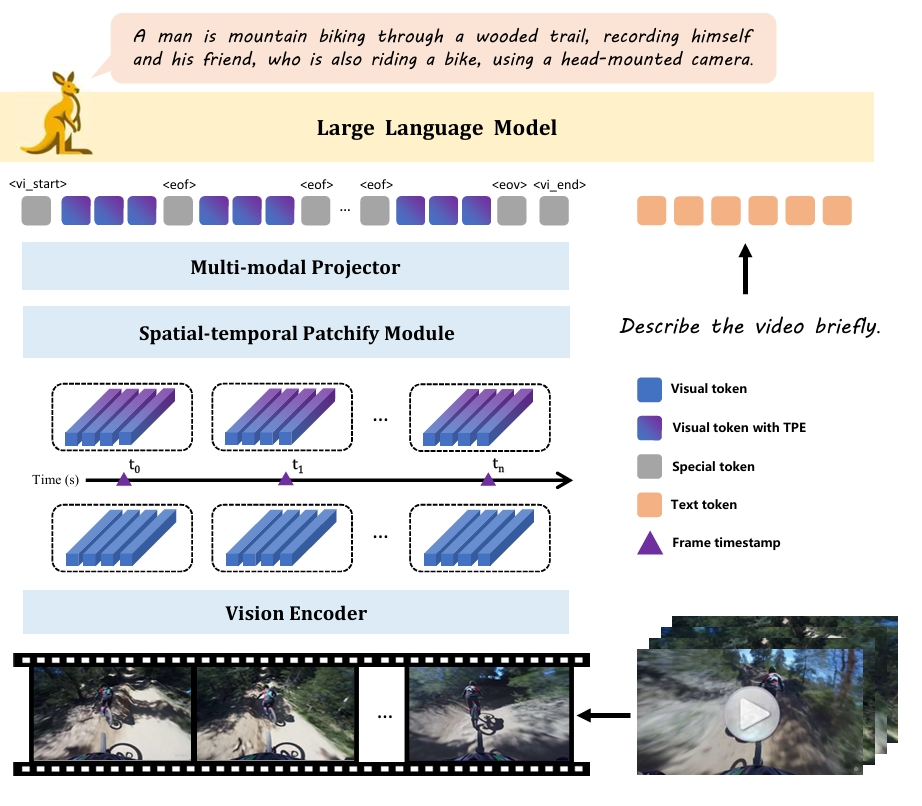
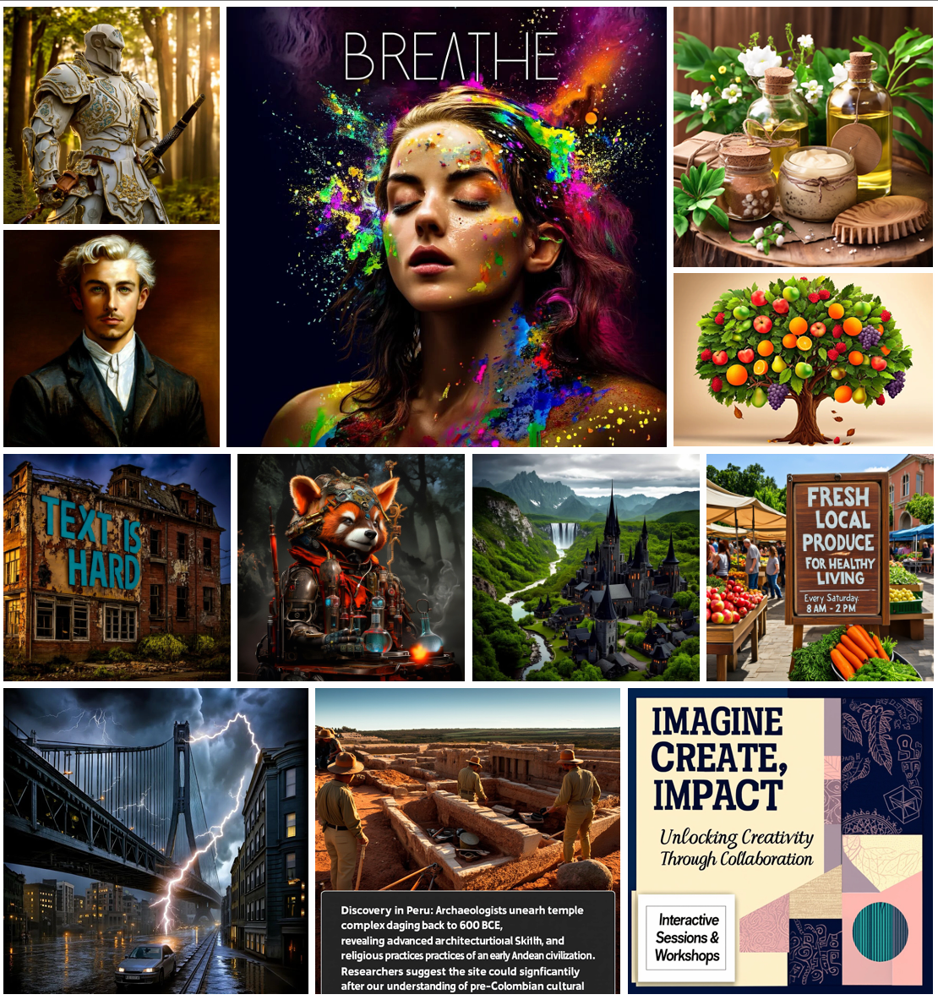
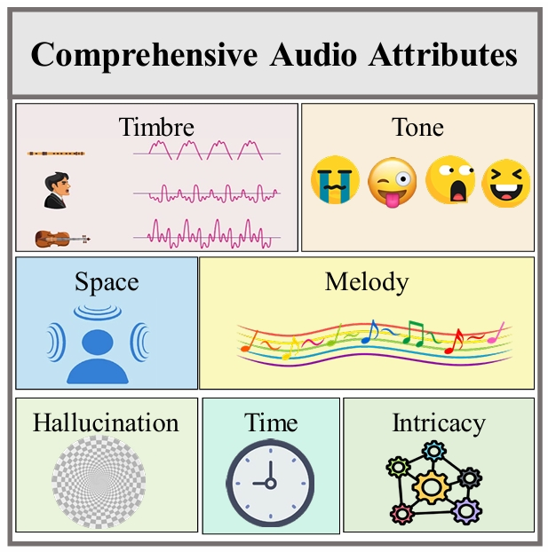
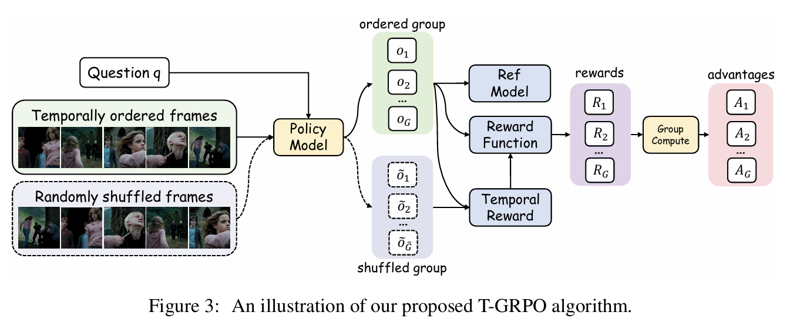

Yibing WangPh.D. candidateSchool of Electronic, Electric and Communication System University of Chinese Academy of Science Beijing, China. Email: wangyibing18@mails.ucas.ac.cn; Github: https://github.com/IceWYB; Google scholar: https://scholar.google.co.uk/citations?user=zNk0c_0AAAAJ&hl=zh-CN&oi=sra |
|
I am a Ph.D. candidate in the School of Electronic, Electric and Communication System, University of Chinese Academy of Science, advised by Prof. Jianbin Jiao. I got a B.E. degree in the University of Chinese Academy of Science in June 2022.
My research interests include computer vision and deep learning, specifically for multimodal learning.
Journal Reviewer: IJCV, ICML, CVPR, etc.
|  | * Jiajun Liu, * Yibing Wang, Hanghang Ma, Xiaoping Wu, Xiaoqi Ma, Xiaoming Wei, Jianbin Jiao, Enhua Wu, and Jie Hu
Kangaroo: A Powerful Video-Language Model Supporting Long-context Video Input [Paper] [Project] [Code] [Model] |
|  | * Zigang Geng, * Yibing Wang, Yeyao Ma, Chen Li, Yongming Rao, Shuyang Gu, Zhao Zhong, Qinglin Lu, Han Hu, Xiaosong Zhang, Linus, Di Wang and Jie Jiang
X-Omni: Reinforcement Learning Makes Discrete Autoregressive Image Generative Models Great Again [Paper] [Code] [Project] [Model] [Space] |
|  | Gong, Kaixiong and Feng, Kaituo and Li, Bohao and Yibing Wang and Cheng, Mofan and Yang, Shijia and Han, Jiaming and Wang, Benyou and Bai, Yutong and Yang, Zhuoran
AV-Odyssey Bench: Can Your Multimodal LLMs Really Understand Audio-Visual Information? [Paper] [Project] [Code] [Dataset] |
|  | Feng, Kaituo and Gong, Kaixiong and Li, Bohao and Guo, Zonghao and Wang, Yibing and Peng, Tianshuo and Wang, Benyou and Yue, Xiangyu
X-Omni: Reinforcement Learning Makes Discrete Autoregressive Image Generative Models Great Again [Paper] [Code] [Model] [Data] |